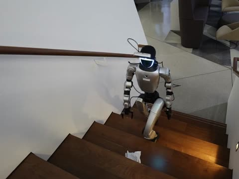
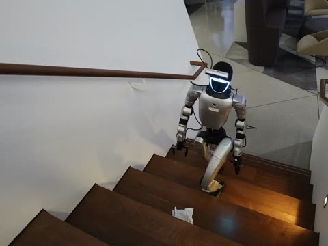
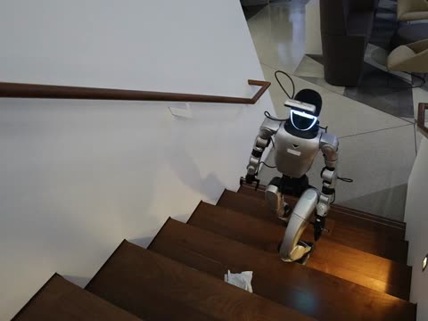

ATLAS: Agentic Test-Time Learning via Self-Improving Harness for Humanoid Loco-Manipulation
1UC Berkeley 2Autonomous System & Physical AI Research Group, NVIDIA 3The University of Hong Kong 4Stanford University
* co-first author · † equal advising · ^ project lead


October 2026 · Early release
- Fully autonomous
- No teleoperation
- No task-specific training in simulation
- No VLA / WAM
- All sensing onboard
![ATLAS keeps the three-layer stack and changes only its middle layer. Left, one phone video of a person pulling open an under-counter cabinet door, no teleoperation, no dataset, goes to System 2, a frozen VLM agent: task decomposition, affordance, action target; it hands System 1 the task specification. System 1, fast: a residual end-effector target with an RL update, slow: agentic update, both marked with an update loop, sends wrist targets to System 0, a frozen whole-body controller. Right, the real robot crouched at the same kind of cabinet, pulling its door open, from zero in one session; it feeds System 1 back a progress indicator, VLM or geometric, defined by the agent. Dashed lines from the slow update to the task specification and the progress indicator: the slow system revises both.](media/fig_system_v23.jpg)

attempt 1 · miss
πφ from zero

attempt 2 · miss
πφ updated

attempt 3 · grasp
πφ updated again
Illustration of the fast online RL update.
- Every control step. The actor adds an offset to the wrist target, ut = πφ(ct, nt); the controller tracks nt + ut.
- At the grasp. The miss is the end-effector error, the gap to the affordance, ‖nT − cT‖; this is what the learner drives down.
- After every attempt. The dynamics model is refit on all attempts so far, ĉt+1 = fψ(ct, nt + ut), and the actor is updated by backpropagation through it, r = −‖nT − ĉT‖².
- Slow system. The agent may move the grasp target n; a move is kept only if the progress indicator improves.
fψ and πφ start from zero in every session · nt wrist target, nT the grasp target · u learned offset · c end effector · ĉ predicted end effector · T grasp step
01
Autonomous Test-Time Learning, One Session
Pick up the trash and put it in the bin.
- Success rate over the last eight attempts rises from 0% to 88% in 38 attempts, from zero.
- No teleoperation. A person steps in only when the object leaves the camera's field of view.
02
More Tasks
The same harness, other tasks. Each from one video of a person and one sentence.
Open the cabinet door. 1×
Navigate to the sofa; pick up the trash along your way and put it in the bin. 1×
Pick up the box, carry it and set it down. 2×
Pick up the box, carry it and set it down. 3×
Pick up the tennis ball. 1.5×
Pick up the can and put it in the bin. 3×
03
More Tasks in Simulation
The same harness, with Isaac Lab standing in for the robot; nothing is trained beforehand. Each strip: the person, a direct retarget of the motion, and the harness, aligned by phase.
Online learning in simulation
Closing the execution gap.
Lower error. Higher success. Within about ten attempts.
- Online RL learner arm
- No learner zero-bias arm
Apple
End-effector errorIn the hold · cm · median
↓ Lower is betterSuccess rate% · mean
↑ Higher is betterBanana
End-effector errorIn the hold · cm · median
↓ Lower is betterSuccess rate% · mean
↑ Higher is betterShaded bands: range across seeds. Gray strip: warm-up.
Online RL against a no-learner control, in the same run. Isaac Lab, one-object pick-and-place, with the real robot’s measured execution bias (x −7.9 cm, y −4.1 cm) injected into the tracker. From attempt 5, each attempt is assigned by coin flip to the learner arm or the zero-bias control arm.
04
Details
FAQ
How often does the agent run?
The agent tells the perception model (SAM 3) what to look for and defines the affordance: the end effector's pose relative to the object. From there SAM 3 finds the object in the image and the depth image places the affordance in 3-D, the whole-body controller carries the end effector to it, and online RL takes care of the tracking error.
How does one phone video become a robot motion?
The person's motion is lifted from the video (GVHMR) and retargeted to the G1 (GMR); that is the reference the whole-body controller tracks. The agent cuts the stretch that is the task and defines the affordance; at run time the reach is anchored to where the camera sees the object, and the learner corrects the wrist.
What does the online learner learn, and from what?
How this body executes wrist commands. Online model-based RL: a dynamics model fitted to the robot's own measurements and an actor updated through it, acting at every control step of the reach. From zero in every session; nothing is collected beforehand.
How does the robot know it missed?
The agent first sets a progress indicator, geometric to begin with: the gripper's closure and what the camera sees after the lift. A background agent reads the robot's ego-view images and state in real time and keeps checking the indicator; when it fits poorly or misjudges too often, the slow system revises it. A miss is retried where it stands.
Which controller is used?
The whole-body controller is ScaleBFM, which we trained to adapt to terrain; that is what carries it up the stairs. The agent, the learner and the retry are the same on the stairs as on the floor.
What runs on the robot, and what off it?
Sensing is all onboard: the head camera (RGB-D) and the joint state. The controller and the acting policy run on the robot; the VLM, SAM 3 and the learner's updates run on a PC over a link; some flat-ground tasks localize the robot with an external tracker.
Does a person do anything during a run?
Nothing, unless the robot walks out of the workspace or the object drops out of the camera's field of view, where the robot would be stuck. The rest of the time you just watch it evolve on its own.
Scope and limitations
Tasks with sustained contact are still hard; opening a heavy door is one. A dynamics model learned per task does not scale; reusing this real-robot experience across tasks is future work.